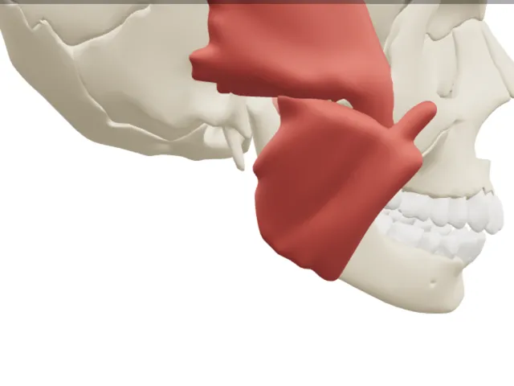
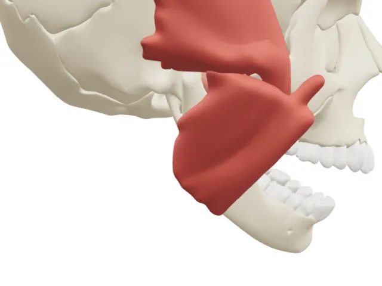
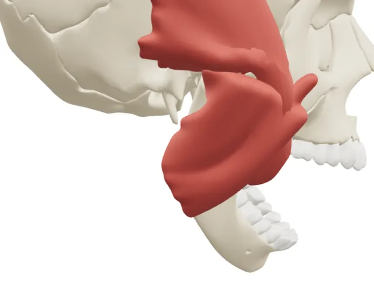
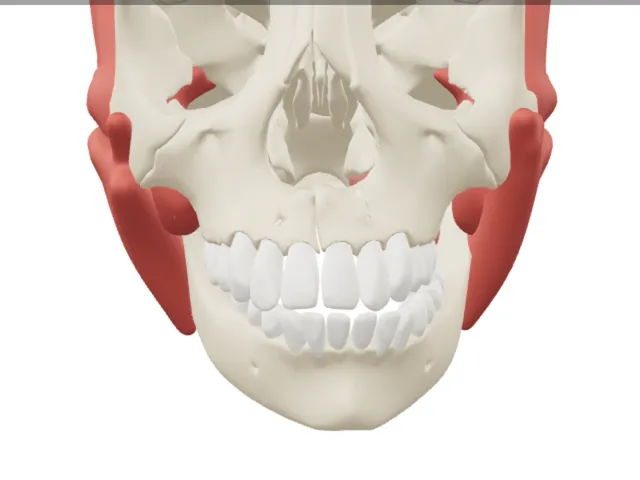
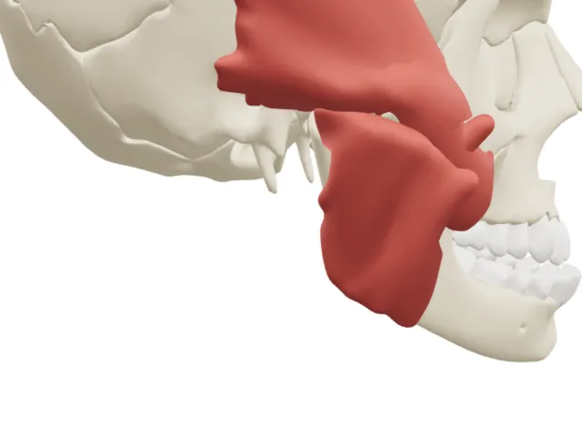

Jaw pain (TMD): exercises and careあごの痛み（顎関節症）：運動とケア
Patient information sheet from Vivatheca. Not yet clinically reviewed. Version 0.1, 6 November 2026.Vivatheca の患者さん向け資料。臨床レビュー未実施。版0.1、2026年11月6日。
What is TMD?
TMD means problems with the jaw joints and the muscles you chew with. It can cause pain in the jaw, face, temple or near the ear. The jaw may click, or be hard to open wide. It is common: about 6 to 9 in every 100 adults have it.13
Most people get better with simple care. Learning about TMD, looking after your jaw and doing jaw moves help the most.12
Five jaw moves5つのあごの運動
Move slowly and stop if the pain gets sharp or worse. Your dentist or physio will tell you which moves to do, how far to go and how often.ゆっくり動かし、痛みが鋭くなったり強くなったりしたらやめます。どの運動を、どこまで、何回行うかは、歯科医師や理学療法士が教えます。

1. Resting jaw1. あごを休める
- Close your lips gently.
- Keep your teeth slightly apart.
- Rest your tongue softly on the roof of your mouth.
- Check this often during the day.
- 唇を軽く閉じます。
- 上と下の歯を少し離します。
- 舌を上あごに軽くつけます。
- 一日に何度も確かめます。
How sure are we? Strongly advised as part of usual care.根拠：ふだんのケアの一部として強く勧められています。1

2. Tongue-up opening2. 舌を上にして開ける
- Put the tip of your tongue on the roof of your mouth, just behind your top front teeth.
- Keep it there and open your mouth slowly, as far as you can without pain.
- Close slowly.
- 舌の先を、上の前歯のすぐ後ろの上あごにつけます。
- そのまま、痛くないところまで、ゆっくり口を開けます。
- ゆっくり閉じます。
How sure are we? Not very. It helped in a few small trials.根拠：弱い。いくつかの小さな試験で役立ちました。4

3. Opening stretch3. 口を開けるストレッチ
- Sit up straight and relax your shoulders.
- Open your mouth slowly until you feel a gentle stretch in your cheeks.
- Hold for a few seconds, then close slowly.
- 背すじを伸ばし、肩の力を抜きます。
- ほおが軽く伸びると感じるところまで、ゆっくり口を開けます。
- 数秒止めてから、ゆっくり閉じます。
How sure are we? More than for the other four. Strongly advised when taught by a dentist or physio, but most trials were small.根拠：5つの中で最も確か。歯科医師や理学療法士が教える場合に強く勧められていますが、小さな試験が多いです。125

4. Side to side4. 左右に動かす
- Let your teeth part a little.
- Slide your lower jaw slowly to one side, as far as feels OK.
- Come back to the middle, then slide to the other side.
- 上と下の歯を少し離します。
- 楽なところまで、下あごをゆっくり片側へずらします。
- 真ん中に戻し、反対側へずらします。
How sure are we? Not very. It is part of plans that helped, but no one has tested it on its own.根拠：弱い。役立った運動の一部ですが、単独では調べられていません。4

5. Jaw forward5. あごを前へ
- Let your teeth part a little.
- Slide your lower jaw slowly forward, as far as feels OK.
- Slide it back slowly.
- 上と下の歯を少し離します。
- 楽なところまで、下あごをゆっくり前へずらします。
- ゆっくり元に戻します。
How sure are we? Not very. It is part of plans that helped, but no one has tested it on its own.根拠：弱い。役立った運動の一部ですが、単独では調べられていません。4
Who can help
- Dentist: finds out what kind of TMD you have and shows you how to care for your jaw.13
- Physio: teaches you jaw moves and how to hold your head and neck.1
- Psychologist: gives a kind of talking care (CBT). It helps you cope with pain and stress.1
- Doctor: looks for other causes of pain and helps with medicines.1
When to get help soon
- Your jaw gets stuck and you cannot open your mouth wide.
- Your jaw gets stuck open and you cannot close it.
- The pain gets worse, or is not better after a few weeks of self-care.
Not yet clinically reviewed. Educational model only. It shows typical anatomy or disease, not any real patient, and is simplified and may contain errors. Not for diagnosis, treatment planning, surgical guides or use in or on the body. Full disclaimer
臨床レビュー未実施。教育用の模型です。特定の患者ではなく一般的な解剖や疾患を示したもので、簡略化されており誤りを含む可能性があります。診断、治療計画、手術ガイド、体内・体表での使用には用いないでください。免責事項の全文
This sheet does not replace advice from your own dentist, doctor or physio. 3D pictures: Vivatheca, from BodyParts3D, © The Database Center for Life Science, CC BY 4.0. Interactive model: vivatheca.com/tmd/この資料は、担当の歯科医師・医師・理学療法士の助言に代わるものではありません。3D画像：Vivatheca（BodyParts3D、© The Database Center for Life Science、CC BY 4.0 より作成）。動くモデル：vivatheca.com/tmd/
Sources出典
- Busse JW, Casassus R, Carrasco-Labra A, et al. Management of chronic pain associated with temporomandibular disorders: a clinical practice guideline. BMJ. 2023;383:e076227. doi.org/10.1136/bmj-2023-076227
- Ooi K, Nishiyama A, Yuasa H, et al. Clinical practice guidelines in primary treatment for temporomandibular disorders: The Japanese Society for the Temporomandibular Joint, 2023 edition. J Prosthodont Res. 2025;69(4):608-617. doi.org/10.2186/jpr.JPR_D_24_00168
- Schiffman E, Ohrbach R, Truelove E, et al. Diagnostic Criteria for Temporomandibular Disorders (DC/TMD) for Clinical and Research Applications. J Oral Facial Pain Headache. 2014;28(1):6-27. doi.org/10.11607/jop.1151
- Shimada A, Ogawa T, Sammour SR, et al. Effectiveness of exercise therapy on pain relief and jaw mobility in patients with pain-related temporomandibular disorders: a systematic review. Front Oral Health. 2023;4:1170966. doi.org/10.3389/froh.2023.1170966
- Idáñez-Robles AM, Obrero-Gaitán E, Lomas-Vega R, et al. Exercise therapy improves pain and mouth opening in temporomandibular disorders: a systematic review with meta-analysis. Clin Rehabil. 2023;37(4):443-461. doi.org/10.1177/02692155221133523